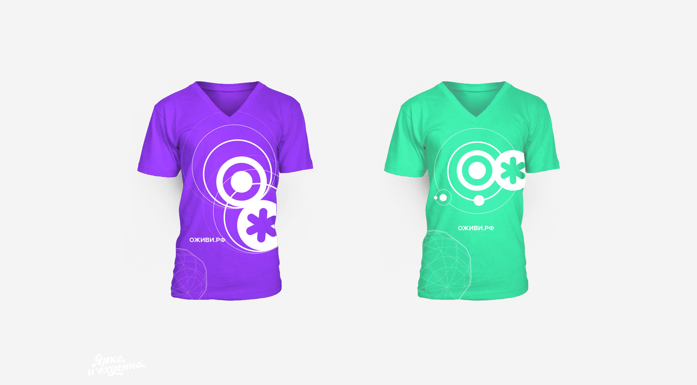
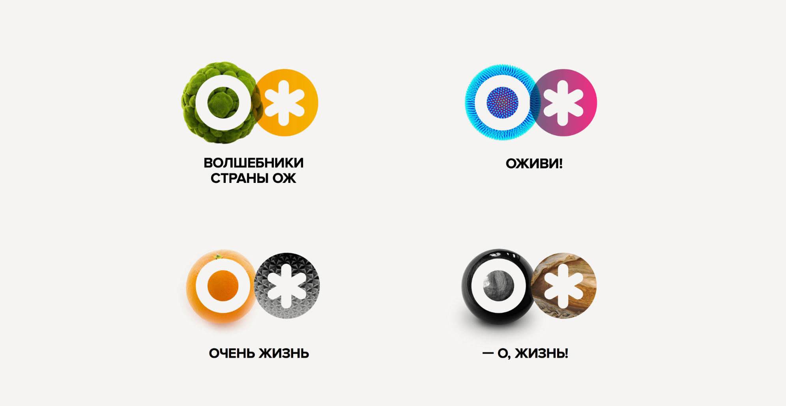

Befit24 Rebranding
In early April Dmitry and Catherine — the creators of BeFit24 brand — announced on their Facebook page that they were looking for an agency for rebranding. I got there quite by accident — thanks to the recommendation of our mutual friend from Skolkovo. And I immediately fell in love with the amazing task and the customers — Dima and Katya — who are deeply into what they do. Sounds like a perfect start.
Tasks: brand naming, creating a logo
Timeframe: 3 weeks
The result was a new brand OJ and fifty dynamic logos, but let me start from the beginning.
Required set of bright images that reflect the essence"


But it all started with a presentation, the title and the first rough logos




Co-Founder @ OJ (BeFit24)
What does a client want a designer to do? Ask as few questions as possible, understand the slightest hint, surprise and overdeliver. We are all grown-up people and we understand that this is close to impossible. However, life makes space for miracles and wonderful people. Sasha definitely knows how to work miracles.
[...]
To sum up, I’m happy with our creative collaboration and mutual understanding. With all my heart I wish that every customer meets their Pygmalion one day!